文字
背景
行間


カテゴリ:GL探究
2021年度国際研究発表会（千葉大学主催）参加
令和２年２月１４日（日）１年生のSGH課題研究２グループ７名がオンラインで行われた国際研究発表会に参加しました。２月８日から１４日までアジア、ASEAN諸国の大学教員、学生、高校生も参加しての研究発表会において、５分のナレーション付きスライド発表を視聴してもらった後、オンライン参加者によるQ&Aが行われました。
１年英語発表班最終仕上げ
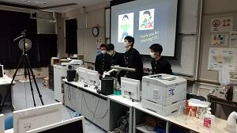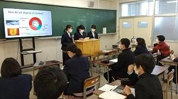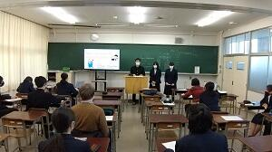
 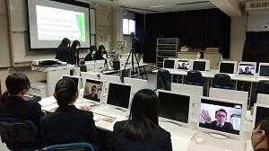
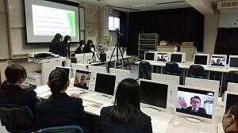 2学年課題研究クラス発表会開催
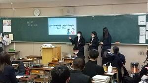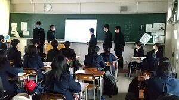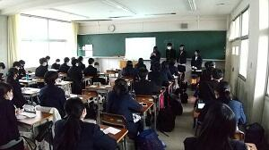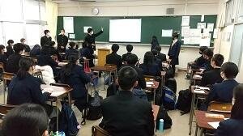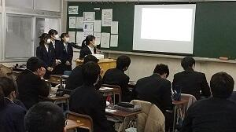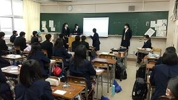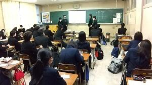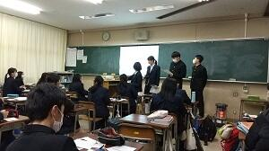
夢の図書館ワークショップ
SGH講演会「世界についてのステレオタイプをどう克服するか」
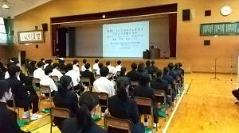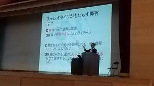
こんなプレゼンテーションは嫌だ！
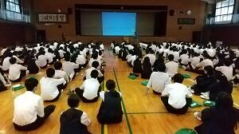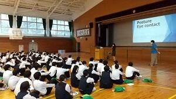
課題研究「献血を広めよう！」班プロジェクト
10月1日（木）、課題研究班「献血を広めよう！」が主催する献血イベントが、日本赤十字社千葉支社の協力のもと、本校で開催されました。班員５人は、１年次から献血をテーマに研究を続け、本年２月に日本赤十字社と連絡を取り合い、学校側に献血イベント開催の協力を求めてきました。近年、献血協力者は減少傾向にあり、かつコロナ禍にも襲われ、一時は開催が危ぶまれましたが、生徒たちはあきらめることなく計画を進め、開催に至りました。５０人以上の生徒から献血希望の申し出があり、予定時間を大幅に超過して採血がおこなわれました。生徒は今後イベント内容や参加者の声を精査し、研究発表にまとめていきます。どのような内容になるか楽しみです。
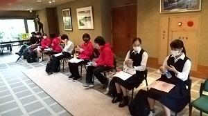「〇〇を考える会」と第２回SGH運営指導協議会
10月6日（火）、6・7限の2時間にわたって「〇〇を考える会」と題した「知的対話」イベントが開催されました。普通科1・2学年計14クラスを解体し、各学年が均等になるようにランダムに組み合わせ、ほとんど初対面同士の6人グループを編成しました。その中で2年生がファシリテーターとなって討議を回すという新たな試みです。テーマは、オリパラの開催やレジ袋有料化の是非、防災やSNSや政治意識、地域の課題やオンラインなど今年話題となった事象を切り口とし、対話を深めていく形をとりました。教員側の事前設定には反省すべき点が多々確認されましたが、ファシリテーターを務めた2年生の奮闘により、実りある「知的対話」が実現しました。アンケート結果の速報からも、こ日の一連のプロセスが、「思考力」「判断力」「表現力」の育成につながることが確認できました。
また同日には、SGH運営指導協議会が開催され、協議委員の先生方にICT・オンラインを中心とした今年度の取組を検証していただくとともに、この日のイベントを見学していただき、貴重なご意見を寄せていただきました。
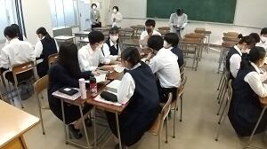
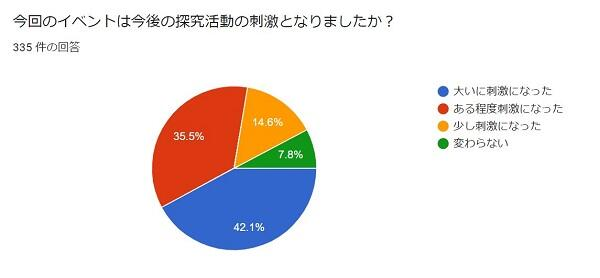
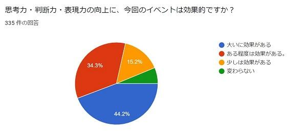
Sakura High School SGH Presentation
8月24日(月)、2年生の課題研究英語発表班80名が、Sakura High School SGH Presentations を開催しました。課題研究の年間スケジュールにおいては中間発表という段階で、夏休みの研究調査を英文スライドでまとめ、7分間の英語スピーチで伝えました。今回の特徴はアドバイザーとして3名の東京大学留学生がオンラインで参加してくださった点です。2人は国内から、1人は帰国中の香港から生徒にアドバイスをくださいました。TV会議システムを利用し、ライブで留学生に配信し、プレゼンテーションもアドバイスも80名の生徒で共有しました。また対面ゲストとして県内で活躍するALTの協力もいただき、刺激的な発表会を開催することが出来ました。コロナ禍により対面での外部交流が困難な中、本校はオンライン交流の実績を着実に積み上げてきました。今回、研究発表会のライブ中継を経験したことにより、秋冬のオンライン発表会に向けて着実な成長を遂げることができました。
Topic | |
1 | Welcome to Sakura |
2 | Revival of the Shopping Street |
3 | Increase the Voting Rate among the Young |
4 | Salt & Vinegar |
5 | Help Mark |
6 | Emerging Infectious Diseases and Climate Change |
7 | Promoting Tourism in Sakura |
8 | No More Bullying on the Internet |
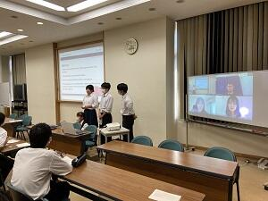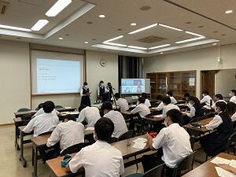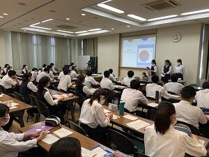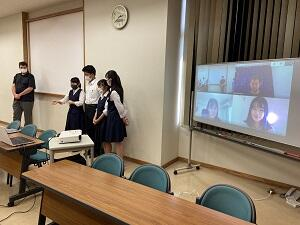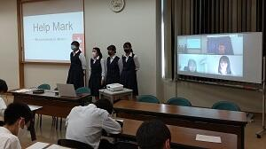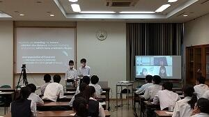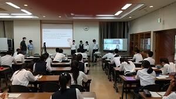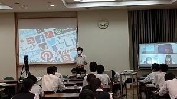
佐倉市風見鶏の里を訪問
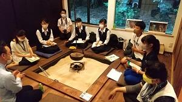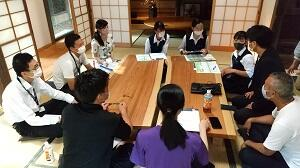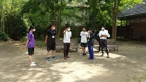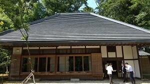
１学年研究テーマ検討中
１学年「１分間スピーチ」全生徒が興味・関心に応じた研究テーマを発表しました。
２学年「研究計画作成」各班が今後の研究計画を立て、具体的な調査・研究に入ります。
３学年「課題研究報告書」３年間の研究の総まとめが完成しました。
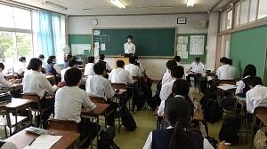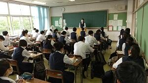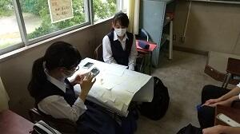
SGH・課題研究進行中
久しぶりのHP更新になりますが、コロナ禍においてもオンラインを活用し、課題研究は着実に進展しています。
３学年：休業中にオンラインでデータをやりとりし、課題研究報告書の提出がほぼ完了しています。
２学年：５月上旬、研究班が再始動し、研究テーマの再設定を実施しました。
１学年：休業中に、オンラインでガイダンスを実施。現在も動画配信とGoogleスライドを組み合わせて探究の手法を学習中。
現在、探究学習はすべてGoogle classroomを通じて情報提供しています。一例として、本日の授業案内を掲載します。
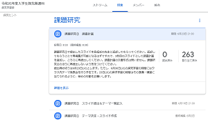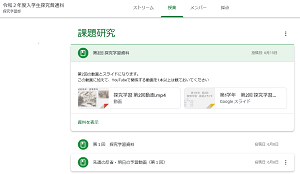
１学年クラス交流ポスター発表会
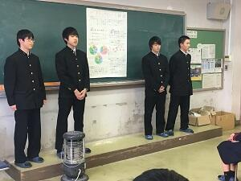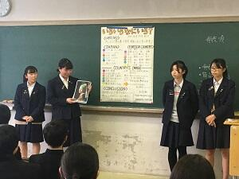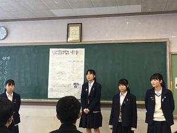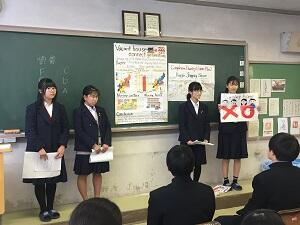
ＳＧＨ課題研究「互いの研究を深め合う発表会」
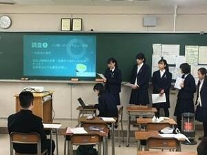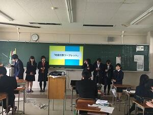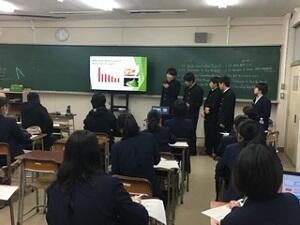
全国高校生フォーラム2019
１学年、探究学習「小さな発表会」
２年GL探究「夏休みの成果発表会」
１年GL探究発表ポスターの作り方
SGH校内課題研究発表会
３月には、SSH・SGH課題研究合同発表会があります。

SGH課題研究発表会に向けて
１年生は、発表会では研究のテーマや研究概要等についてポスターを用いて英語で発表します。今日は日本語でポスターを作成し、発表内容を固める作業を行ないました（写真右 話し合いながらポスターを作成している様子）。
２年生は、発表会では研究成果についてプレゼンテーションソフト又はポスターを用いて発表します。今日は研究の内容を整理し、他者にわかりやすく伝えるための準備を行ないました（写真左・中 発表の内容について話し合っている様子）。